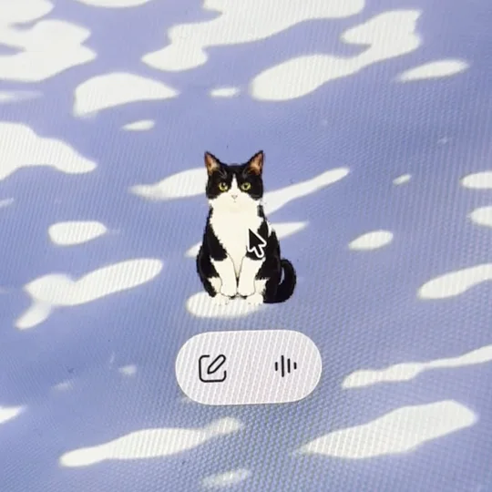
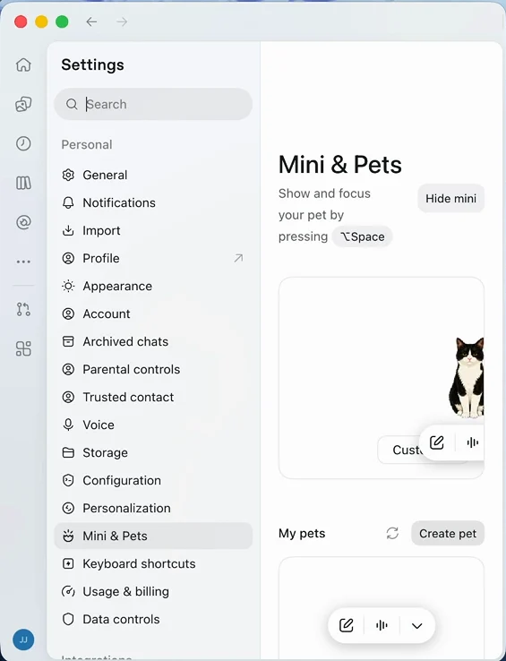
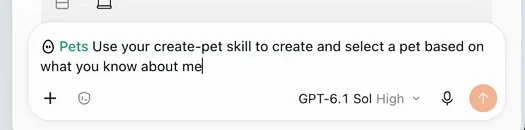
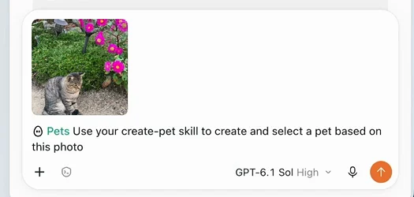
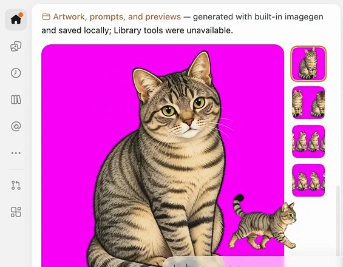
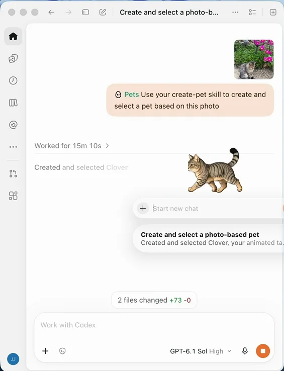

고양이를
Codex 펫으로 만들기.
Codex 화면 위에 떠다니는 펫을 내 고양이로 바꿀 수 있어요.
사진 한 장과 클릭 몇 번이면 돼요.
고양이 펫, 어떻게 만들어요?
Settings → Mini & Pets → Create pet을 누르세요. 프롬프트가 채워진 새 채팅이 열리면 끝부분을 based on this photo로 바꾸고 고양이 사진을 올려서 보내면 됩니다. 다 만들어지면 My pets 옆의 새로고침을 누르고 내 고양이를 고르세요.
Codex 앱의 펫
Codex 펫이 뭐예요
Codex 데스크톱 앱에는 작은 캐릭터가 화면 위에 떠 있는 기능이 있어요. 다른 창을 보고 있어도 Codex가 일하는 중인지, 내 답을 기다리는지, 검토할 게 생겼는지 펫이 알려줘요. 설정 화면에 적힌 대로 ⌥Space를 누르면 펫을 보이게 하고 바로 불러올 수 있어요.
저는 기본 펫이 진짜 별로였어요. 그러다 런던 Dev Day에서 이 기능을 만든 개발자가 OpenAI 사내에서 어떻게 쓰는지 보여줬는데, 사내에서 엄청 유행해서 다들 자기 고양이를 펫으로 만들었다고 하더라고요. 그래서 저도 만들어 봤어요.

프롬프트를 그대로 보내면 Codex가 제 대화 기록을 보고 저한테 맞춘 펫을 만들어요. 제 첫 펫이 그렇게 나왔어요. 고양이를 원한다면 아래 3단계처럼 끝부분만 바꾸면 됩니다.
만드는 순서
사진으로 펫 만들기
Settings 열기
왼쪽 아래 프로필 아이콘을 누르고 메뉴에서 Settings를 고르세요. 같은 메뉴의 Hide Pet으로 펫을 잠깐 숨길 수도 있어요.

프로필 메뉴의 Settings Mini & Pets에서 Create pet
설정 목록에서 Mini & Pets를 누르고, My pets 오른쪽의 Create pet을 누르세요.

Create pet 왼쪽의 동그란 화살표가 5단계에서 쓰는 새로고침이에요. 프롬프트 끝 바꾸기
프롬프트가 채워진 새 채팅이 열려요. 마지막 부분만 지우고
this photo로 바꾸세요.Use your create-pet skill to create and select a pet based onwhat you know about meUse your create-pet skill to create and select a pet based on this photo
Create pet을 누르면 입력창에 이 문장이 들어가 있어요. 고양이 사진 올리기
사진을 입력창에 끌어다 놓거나 + 버튼으로 첨부하고 보내세요. 사실 저는 고양이가 없어서 친구네 고양이 사진을 썼어요.

사진이 붙고 프롬프트가 “based on this photo”로 끝나면 보내면 돼요. 새로고침하고 고르기
Codex가 사진을 보고 그림을 그린 다음, 움직이는 모습까지 만들어서 펫으로 등록해요. 저는 다 될 때까지 25분 정도 기다렸어요. 끝나고 나면 9가지 동작과 16가지 시선 방향을 검사까지 마쳤다고 알려줘요. 만든 그림과 미리보기는 내 컴퓨터에 저장돼요.

사진 속 고양이를 그림으로 만든 결과. 오른쪽 썸네일이 동작별 모습이에요. “Created and selected”라는 메시지가 뜨면 끝난 거예요. Settings → Mini & Pets로 돌아가서 My pets 옆의 새로고침을 누르고 내 고양이를 고르세요.

완성된 고양이가 바로 화면 위를 뛰어다녀요.
더 닮게 만들려면
사진 고르는 팁
저는 한 장으로 만들었지만, 여러 각도에서 찍은 사진이 있으면 같이 올리는 게 더 좋아요.
회사에서 Codex를 쓰고 있다면 이것부터 설정해 보세요. 일하는 동안 내 고양이가 화면 위에 앉아 있어요.
2026.11.03 · Codex 데스크톱 앱 기준이에요. 버전에 따라 메뉴 이름과 위치가 달라질 수 있어요.
← 다른 노트 보기